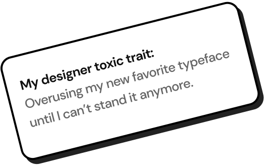

As the Founding Designer, I designed the entire product and brand experience. The app features natural language voice interactions and a bundling of multiple apps into a single, seamless experience, helping users run their day - a first in the industry.
👏 Project Impact: World-class retention and strong PMF signals.
VIEW CASE STUDY →Took the Advisor Console from the initial design stages to GA launch while building & iterating on the core features to bullet-proof the product.
👏 Project Impact: 100+ companies onboarded within a month with numerous other requesting beta access.
VIEW CASE STUDY →The given compilation showcases previews of some of the mobile projects I've done over the years, including projects done with teams at companies/startups and also some speculative passion projects I did for myself.
💯 Project Impact: Variable impact across differnt teams/companies.
VIEW CASE STUDY →
Worked with the Growth team to design experiments and touch-points to boost user-acquisition across the funnel.
🎖 Project Impact: This case-study is a compilation of a few growth projects, each boosting user-acquisition in varying capacity.
VIEW CASE STUDY →Conceptualized the visual ‘shop the look’ expereince for Bing and then pivoted it for MSN. Designed extensively to handle edge cases.
🎊 Project Impact: 3 Million impressions and 30,000 active engagements every month.
VIEW CASE STUDY →Redesigned the Offers answer on Bing Search through optimized information & layout design while making data-driven decisions.
🎉 Project Impact: Achieved unprecedented user engagement on the answer.
VIEW CASE STUDY →Designed a detailed framework for creating & scaling decorators across Microsoft Shopping teams. Also built the north star vision.
🍾 Project Impact: Created a shared vocabulary in the team & achieved instant user engagement.
VIEW CASE STUDY →Flow is an eco-system of connected devices that enables asthmatics lead a more normal life by helping them better manage their condition.
👏 Project Impact: This was one of my most recognized class projects during my Masters.
View IN FIGMA →